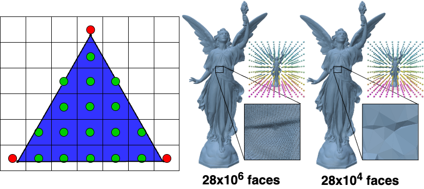
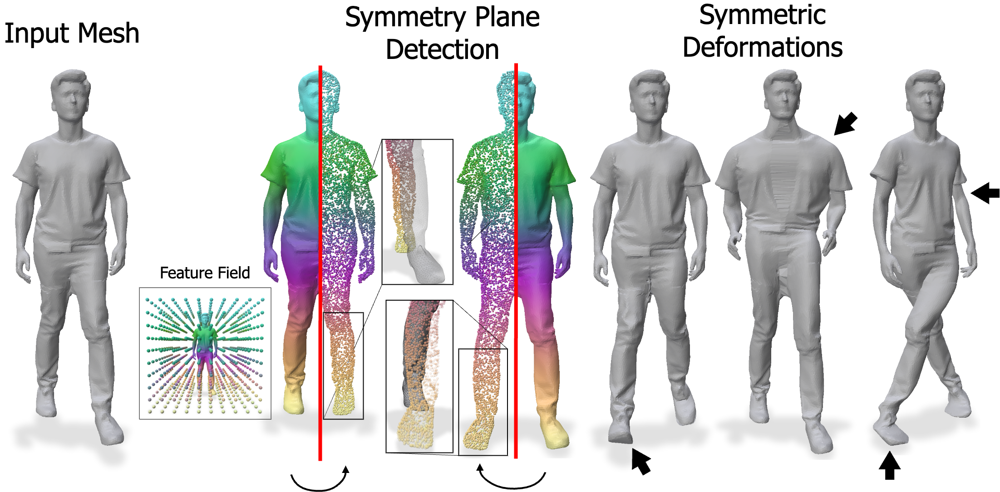

Deep Feature Deformation Weights
University of Chicago
Abstract. Handle-based mesh deformation is a classic paradigm in computer graphics which enables intuitive edits from sparse controls. Classical techniques are fast and precise, but require users to know the ideal distribution of handles apriori, which is often unintuitive and inconsistent across visually similar shapes. Handle sets cannot be adjusted easily, as weights are typically optimized through energies defined by the handle choices. Modern data-driven methods, on the other hand, provide semantic edits but sacrifice fine-grained control and speed. We propose a technique that achieves the best of both worlds: deep feature proximity yields smooth, visual-aware deformation weights with no additional regularization. Importantly, these weights are computed in real-time for any surface point, unlike prior methods which require expensive optimization. We introduce barycentric feature distillation, an improved feature distillation pipeline which leverages the full visual signal from shape renders to make distillation complexity robust to mesh resolution. This enables high resolution meshes to be processed in minutes versus potentially hours for prior methods. We preserve and extend classical properties through feature space constraints and locality weighting. Our field representation enables automatic visual symmetry detection, which we use to produce symmetry-preserving deformations. We show a proof-of-concept application which can produce deformations for meshes up to 1 million faces in real-time on a consumer-grade machine.

Barycentric Feature Distillation is our novel distillation method which makes use of rasterized geometry to obtain a complete mapping from pixel features to 3D surface points. Past methods distill image features to vertices, whereas we distill to a neural field, and thus can use all rendered surface points as optimization targets. We further observe that high-resolution meshes look visually unchanged even under extreme simplification, and distill using decimated meshes. The feature field PCA insets show that even at 99% simplification, the example shape induces a virtually identical feature field. These design choices enable high-quality feature distillation with guaranteed convergence for meshes of any resolution in a matter of minutes.

Visual Symmetry Detection. Our neural field representation returns visual features for arbitrary 3D points. This enables us to evaluate candidate symmetry planes on points not necessarily on the shape surface (middle insets). After symmetry identification, we can generate a variety of symmetric deformations on corresponding parts, even when the geometries are in different extrinsic poses.
Results Carousel. We show a selection of results using shapes and prescribed deformations from the APAP and Part-Objaverse Tiny datasets. The results show a combination of translation-based and affine deformations, and the corresponding weight heatmap is shown for single-handle deformations.
Interactive Deformation. We apply our distilled image weights to real-time mesh deformation. Click any point on the mesh to select a handle vertex. Adjust the sliders to apply translation, rotation, and scale deformations in real time. Surface colors show the influence (weight) of the selected handle on each vertex. See the code for a full implementation in Polyscope.
@InProceedings{DFD_Liu_2026_CVPR,
author = {Liu, Richard and Lang, Itai and Hanocka, Rana},
title = {Deep Feature Deformation Weights},
booktitle = {Proceedings of the IEEE/CVF Conference on Computer Vision and Pattern Recognition (CVPR)},
month = {June},
year = {2026},
}
This project was funded by NSF 2402894, 2304481, the United States - Israel Binational Science Foundation (BSF) 2022363, gifts from Adobe, Snap, Google, and The Bennett Family AI + Science Collaborative Research Program.
Website template made by Nam Anh Dinh.